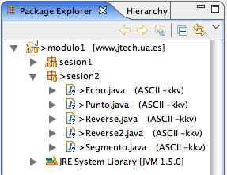
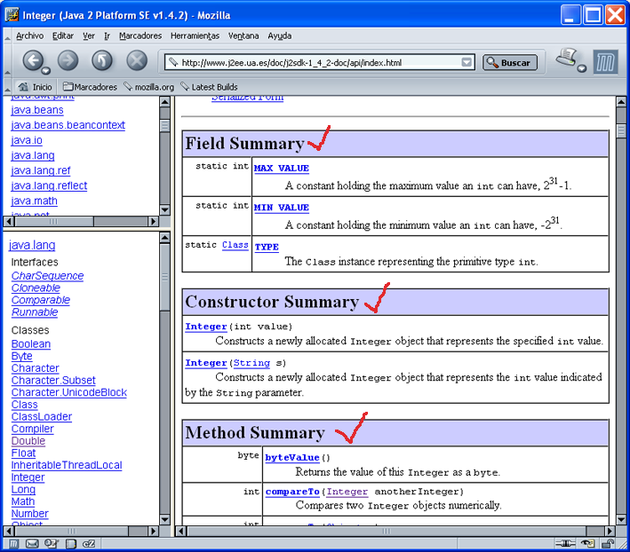

Antes de empezar a hablar de Programación Orientada a Objetos,
vamos a continuar con algún ejercicio básico de Java. Nos va a servir
para comprobar cómo usar en Java elementos muy útiles como los arrays
o los parámetros de entrada de un programa. También vamos a aprovechar
este primer ejercicio para incorporar al proyecto modulo1
algunas clases que hemos dejado en la web como material de la sesión.
Lo primero es incorporar al proyecto actual las clases Java que te proporcionamos en esta sesión de ejercicios.
Primero descarga y descomprime el
fichero sesion2.zip, que está en página de ejercicios
de la web del curso. Verás que contiene una carpeta con el
nombre sesion2 y, dentro de ella, algunas clases
Java. Son las clases iniciales que vas a usar en esta sesión de
ejercicios.
Vamos a arrastrar esas clases al proyecto actual de Eclipse. En
el sistema operativo abre una ventana del explorador de ficheros y
busca la carpeta sesion2 que acabas de descargar y
descomprimir. Arrastra esa carpeta a la ventana de explorador de
paquetes de Eclipse. Verás que Eclipse incorpora la carpeta en el
proyecto, creando un nuevo paquete Java. La vista tendrá el
siguiente aspecto (no te fijes demasiado en el nombre de las
clases, puede que haya alguna más o menos de las que realmente
tienes):

Veamos en primer lugar un programa que escribe en la salida estándar los argumentos que se le pasan, separados por dos puntos ":".
package sesion2;
public class Echo {
public static void main(String[] args) {
int i=0;
while (i < args.length){
System.out.print(args[i]);
System.out.print(":");
i++;
}
System.out.println();
}
}
Ejecuta este programa en Eclipse. Para lanzar la clase, deberás pasarle al intérprete los argumentos de entrada. Eso es muy sencillo cuando estás usando la línea de comandos:
>java Echo hola que tal hola:que:tal
Pero, ¿cómo lanzar un programa con argumentos en la línea de
comandos desde Eclipse? Para esto es necesario crear
una configuración de ejecución, un elemento muy útil de
Eclipse. Selecciona en el menú la opción Run > Run
... (o Run As > Run... si eres de los que te
gusta ahorar tiempo y usar el botón derecho). Aparecerá la ventana
de gestión de configuraciones de ejecución, en la que podrás crear
y guardar con un nombre una configuración de ejecución. Dale a
esta configuración el nombre conf1, selecciona
como Main class la clase Echo y dale los
valores que quieras a los argumentos del programa. Puedes guardar
la configuración con la opción Apply y ejecutarla
con Run. La configuración queda guardada y puedes
lanzarla cuando quieras, por ejemplo después de realizar
modificaciones en el programa principal.
Escribe un programa Reverse que escriba en la
salida estándar los argumentos que se le pasa al intérprete Java,
pero invertidos y separados por dos puntos ":". Si lo ejecutáramos
desde la línea de comando aparecería lo siguiente.
>java Reverse Hola que tal tal:que:Hola
Escribe un último programa Reverse2 que invierta
también los caracteres de cadaa palabra. Para ello, puedes acceder
al carácter i-ésimo de una palabra usando el
método charAt de la clase String. Por
ejemplo str.charAt(0) devuelve el carácter 0 (el
primero) del objeto String que está en la
variable str. También necesitas saber la longitud de
una palabra. Puedes obtener la longitud de un String
str, llamando al método length
así: str.length().
>java Reverse2 Hola que tal lat:euq:aloH:
En Programación Orientada a Objetos (POO) un programa es un conjunto de objetos interactuando entre si. Cada objeto (también denominado instancia) guarda un estado (mediante sus campos, también llamados variables de instancia) y proporciona un conjunto de métodos con los que puede ejecutar una conducta. Tanto los métodos como los campos de un objeto vienen definidas en su clase.
Supongamos la siguiente clase Persona, definida en un
paquete llamado base
package base;
public class Persona {
String nombre;
public int edad;
public Persona() {
nombre = "Pepe";
edad = 18;
}
public void setNombre(String nombre) {
this.nombre = nombre;
}
public String getNombre() {
return nombre;
}
public int getEdad() {
return edad;
}
}
En esa clase se definen los campos nombre
y edad. También se definen los
métodos Persona (es el constructor, que sirve para crear
nuevos objetos de esta clase), getNombre()
y getEdad() que devuelven la información del objeto y por
último los métodos setNombre(nombre)
y setEdad(edad) que modifican la información del
objeto.
Supongamos ahora la siguiente clase TestPersona que
contiene un método main. Supongamos que se encuentra
definida en un paquete distinto del paquete base, por
ejemplo el paquete test. En este caso habrá que importar
la clase anterior (por estar en un paquete distinto):
package test;
import base.Persona;
public class TestPersona {
public static void main(String[] args) {
Persona p = new Persona();
System.out.println("Nombre de persona: " + p.getNombre());
p.setNombre("Maria");
System.out.println("Nombre de persona: " + p.getNombre());
System.out.println("Edad de persona: " + p.getEdad());
p.edad = 9;
System.out.println("Edad de persona: " + p.getEdad());
}
}
El test debería dar los siguientes resultados.
Nombre de persona: Pepe Nombre de persona: Maria Edad de persona: 18 Edad de persona: 9
En POO debemos pensar que los objetos encapsulan (contienen) tanto
los datos como los métodos que modifican y acceden a estos datos. Así,
una instancia de la clase Persona contiene los
datos nombre y edad y los
métodos getNombre, getEdad
y setNombre. Es posible acceder a un método o una
variable de instancia de un objeto usando el operador ".". Por ejemplo:
p.setNombre("Maria");
p.edad = 9;
Podemos usar modificadores de acceso para configurar los
permisos de acceso a los elementos. En el ejemplo anterior todos los
métodos y la variable de instancia edad tienen el
modificador public. La variable de
instancia nombre tiene el nivel de acceso por defecto. En
este nivel, se puede acceder al elemento desde clases definidas en el
mismo paquete, pero no en otros paquetes.
Lo normal es restringir el acceso a las variables de instancia de
un objeto y no hacerlas públicas, sino que todos los accesos externos
a los datos de un objeto sean a través de métodos. Es el caso de la
variable nombre del ejemplo. La
variable edad la hemos hecho pública para mostrar que
también es posible. Hablaremos más sobre los selectores de acceso en
la siguiente sesión.
Veamos ahora el siguiente código. Crea un objeto de la
clase Persona y lo guarda en la
variable unaPersona. Después se llama al
método setNombre y se modifica la edad del objeto recién
creado.
Persona unaPersona = new Persona();
unaPersona.setNombre("Juan Pérez");
unaPersona.edad = 12;
Después de ejecutar el código, el objeto unaPersona
tendrá como nombre el String "Juan Pérez" (otro objeto, por
cierto) y como edad el entero (int) 12. En Java existen datos
primitivos que no son objetos, como por
ejemplo double, int, char, etc. Se pueden
reconocer porque el nombre del tipo no comienza por mayúscula.
Otra cosa a resaltar del ejemplo anterior. Fijémonos en la primera instrucción del ejemplo anterior:
Persona unaPersona = new Persona();
Hemos dicho que en esta instrucción el objeto de
tipo Persona recién creado se guarda en la
variable unaPersona. En POO también podemos ver la
asignación de otra forma. Podemos ver esta instrucción como una forma
de definir un identificador que va a designar el objeto recién
creado. Estaríamos entonces diciendo que el identificador del objeto
recién creado es unaPersona. En esta interpretación,
entonces, las asignaciones se convierten en definiciones de
identificadores (etiquetas) de objetos. Por ejemplo, si tuviéramos el
código
Persona otraPersona = unaPersona;
estaríamos dando al objeto con el identificador
"unaPersona" otro identificador adicional. Así, los
identificadores "otraPersona" y "unaPersona"
se referirían al mismo objeto.
Esta interpretación de pensar en identificadores de objetos, en lugar de en variables te será de mucha utilidad en el futuro, si te embarcas en proyectos de programación de componentes distribuidos con Java. Pero esto queda fuera del alcance de este curso.
Una última consideración. ¿Qué sucede cuando pasamos un objeto como parámetro de una función?. Supongamos que añadimos el siguiente método en la clase Persona:
public void copiarEn(Persona p) {
p.edad = this.edad;
p.nombre = this.nombre;
}
Y supongamos que escribimos el siguiente método main:
public static void main(String[] args) {
Persona p1, p2;
p1 = new Persona();
p1.setNombre("Pepe");
p1.edad =40;
p2 = new Persona();
p2.setNombre("Juan");
p2.edad = 10;
p1.copiarEn(p2);
System.out.println(p2.getNombre());
System.out.println(p2.edad);
}
Cuando llamamos al método copiarEn del
objeto p1, le pasamos como parámetro el
objeto p2. Tenemos que entender que le estamos pasando al
método una referencia (¡no una copia!) al
objeto p2. Así, cuando se dentro del
método copiarEn modificamos el objeto que se pasa como
parámetro estamos modificando el objeto p2. Por esto la
salida del ejemplo sería:
Pepe 40
Repasamos a continuación de forma concisa algunos de estos conceptos fundamentales de POO, incluyendo ejemplos adicionales:
Supongamos el siguiente programa Java
import java.util.*;
public class MiClase
{
public int a;
ArrayList v;
public MiClase()
{
a = 0;
v = new ArrayList();
}
public void imprimirA()
{
System.out.println (a);
}
public void insertar(String cadena)
{
v.add(cadena);
}
}
La forma de especificar los elementos en el programa es la siguiente:
Paquetes: equivalentes a los "include" de C, permiten utilizar clases en otras, y llamarlas de forma abreviada:
import java.util.*;
Clases:
public class MiClase {
...
}
Campos: Constantes, variables y en general elementos de información.
public int a; ArrayList v;
Métodos: Para las funciones que devuelvan algún tipo de valor, es imprescindible colocar una sentencia return en la función.
public void imprimirA() {
// implementación del método
System.out.println(a);
}
public void insertar(String cadena) {
// implementacion del metodo
v.add(cadena);
}
Constructores: Un tipo de método que siempre tiene el mismo nombre que la clase. Se pueden definir uno o varios. No devuelve nada; se llama automáticamente cada vez que se crea un objeto de la clase, para inicializar sus variables de instancia.
public MiClase() {
// inicializo las variables de instancia del objeto MiClase
a = 0;
v = new ArrayList();
}
Así, podemos definir una instancia con new:
MiClase mc;
mc = new MiClase ();
mc.a++;
mc.insertar("hola");
No tenemos que preocuparnos de liberar la memoria del objeto al dejar de utilizarlo. Esto lo hace automáticamente el garbage collector.
Fíjate ahora en las clases Punto
y Segmento que estaban entre los materiales de la
sesión. Escribe (en el paquete sesion2) una clase
llamada TestGeom que contenga un
método main y que pruebe estas clases.
Añade en la clase Punto un
metodo traslada(incX, incY) que añade los incrementos
en x e y a las coordenadas correspondientes del
punto. Prueba a crear un segmento entro dos puntos
dados p1 y p2 y a trasladar alguno de
ellos. ¿Qué pasa con el segmento? ¿Cambia sus coordenadas? ¿Cambia
su longitud? (incluye la prueba en la clase TestGeom
y contesta en un fichero respuestas.txt que debe
estar en el paquete sesion2).
Añade las clases Circulo
y Rectangulo. Defínelas e impleméntalas como te
parezca más adecuado. La única restricción es que debes definir en
la clase Rectangulo un
método intersecta(Rectangulo otroRect) y otro
método rectInterseccion(Rectangulo otroRect). El
primero devuelve un booleano y comprueba si intersectan el
rectángulo que ejecuta el método con otro que se le pasa como
parámetro. El segundo método devuelve el rectángulo de
intersección entre los dos rectángulos y null si
ambos no intersectan.
Modifica el programa TestGeom para comprobar estas
operaciones.
Escribe un programa llamado MuchosRectangulos que
haga lo siguiente:
Como ejemplo puedes mirar el siguiente código, que pide un número al usuario, guarda en un array esa cantidad de números aleatorios y escribe por la salida estándar los números generados que son pares.
package sesion2;
import java.io.BufferedReader;
import java.io.IOException;
import java.io.InputStreamReader;
public class Numeros {
static int[] numeros;
public static void main(String[] args) {
int i, j;
String line;
// Leo el número escrito por el usuario
do {
System.out.print("Cuántos números?: ");
BufferedReader in = new BufferedReader(
new InputStreamReader(System.in));
try {
line = in.readLine();
i = Integer.parseInt(line);
} catch (IOException e) {
i = 0;
System.out.println("IOException: "+ e);
}
} while (i > 100);
numeros = new int[i];
for (j = 0; j < i; j++) {
double d = Math.random() * 800;
System.out.println(d);
numeros[j] = (int) d;
}
int nPares = 0;
for (j = 0; j < numeros.length; j++) {
int n = numeros[j];
if (n % 2 == 0) {
System.out.println(n);
nPares++;
}
}
System.out.println("Total pares: " + nPares);
}
}
Los campos y los métodos de una clases pueden tener el
modificador static, como ya has visto en todas las
funciones main que hemos escrito hasta ahora. ¿Qué
significa esa palabra?.
Sencillamente, es la forma en Java de indicar que un elemento
(campo o método) corresponde a la clase y no a las instancias de esa
clase. Se usa para definir variables y métodos de clase. El elemento
declarado como static corresponde a la clase en la que se
define y todas los objetos de esa clase lo comparten. Es más, no es
necesario crear ningún objeto de la clase para acceder a ese elemento,
sino que se accede mediante el propio nombre de la clase.
Por ejemplo, si declaramos lo siguiente:
public class Trabajador {
public static double sueldoBase;
}
estamos declarando una variable de clase de la
clase Trabajador. Al ser public podemos
acceder a ella desde cualquier clase y paquete. Para acceder a la
variable habría que referenciarla a través del propio nombre de la
clase:
... double sueldo = Trabajador.sueldoBase; ...
Con los métodos de clase sucede igual. Por ejemplo, la
clase Math contiene una gran cantidad de métodos
estáticos. Todos son del estilo siguiente:
public class Math {
public static double cos(double arg0) {
...
}
...
}
Para llamar a un método de clase hay que usar el nombre de la clase. No es necesario crear ningún objeto de esa clase.
... double coseno = Math.cos(alfa); ...
Por último, si añadimos a una variable de clase el
modificador final estamos indicando que esa variable no
se va a poder modificar. Es la forma de declarar constantes en
Java. En el siguiente ejemplo se está definiendo la
constante Trabajador.sueldoBase:
public class Trabajador {
public final static double sueldoBase = 550.40;
}
Como curiosidad, el orden en el que se declaran los modificadores es indiferente. Podríamos haber escrito:
public class Trabajador {
double static final public sueldoBase = 550.40;
}
Vamos con un ejercicio en el que comprobar estos conceptos.
Todas las clases las vamos a definir en el
paquete sesion2. Se encuentran en la plantilla de
ejercicios de la sesión 2.
Supongamos las siguientes clases Contador
y ContadorTest
package sesion2;
public class Contador {
static int acumulador = 0;
int valor;
static public int acumulador() {
return acumulador;
}
public Contador(int valor) {
this.valor = valor;
acumulador += valor;
}
public void inc() {
valor++;
acumulador++;
}
public int getValor(){
return valor;
}
}
package sesion2;
public class ContadorTest {
public static void main(String[] args) {
Contador c1, c2;
System.out.println(Contador.acumulador());
c1 = new Contador(3);
c2 = new Contador(10);
c1.inc();
c1.inc();
c2.inc();
System.out.println(c1.getValor());
System.out.println(c2.getValor());
System.out.println(Contador.acumulador);
}
}
Compila las clases y pruébalas. Responde a las siguientes
preguntas en el fichero respuestas.txt
¿Se pueden realizar las siguientes modificaciones en el
código de la clase Contador, sin que cambie el
funcionamiento de la clase? ¿Por qué?
acumulador += valor" en el
constructor Contador por "this.acumulador +=
valor".acumulador += valor" en el
constructor Contador por "Contador.acumulador +=
valor".valor++" por
"this.valor++" en el método inc().¿Qué valores imprime el
programa ContadorTest?
Si cambiamos en la clase Contador la línea "static
int acumulador = 0" por "private static int
acumulador = 0", ¿aparece algún error? ¿por
qué?
¿Qué sucede si no inicializamos el valor del campo
acumulador?
Vamos a complicar un poco más el código
de Contador, añadiendo una constante
(VALOR_INICIAL) a la clase y otro nuevo constructor.
El código es el que sigue (en negrita lo que se ha añadido). El
modificador final indica que el valor asignado
a VALOR_INICIAL no puede modificarse.
package sesion2;
public class Contador {
static int acumulador;
final static int VALOR_INICIAL=10;
int valor;
static public int acumulador() {
return acumulador;
}
public Contador(int valor) {
this.valor = valor;
acumulador += valor;
}
public Contador(){
this(Contador.VALOR_INICIAL);
}
public void inc() {
this.valor++;
acumulador++;
}
public int getValor(){
return this.valor;
}
}
Fíjate en la llamada
"this(Contador.VALOR_INICIAL)". ¿Qué hace? Escribe un
programa ejemplo ContadorTest2 que compruebe el
funcionamiento de la clase modificada. Por último, una pregunta
algo complicada: ¿Qué sucede si cambiamos la línea
"this(Contador.VALOR_INICIAL)" por "new
Contador(Contador.VALOR_INICIAL)"?
Por último, realiza las siguientes modificaciones en la
clase Contador:
nContadores que contenga
el número de contadores creadosvalores que contenga
un array con los valores de los contadores creados.getValores que devuelva un array
con los valores de los contadores creados.Cuando se programa con Java, se dispone de antemano de un conjunto de clases ya implementadas. Estas clases (aparte de las que pueda hacer el usuario) forman parte del propio lenguaje (lo que se conoce como API (Application Programming Interface) de Java).
Una herramienta muy útil son las páginas HTML con la documentación del API de Java. Puedes encontrar estas páginas en los recursos del curso. Vamos a usar en concreto la versión 1.4.2 de Java.
Si consultamos la página principal de la documentación, veremos el enlace "Java 2 Platform API Specification" dentro del apartado "API & Language Documentation". Siguiendo ese enlace, aparece la siguiente página HTML. Es una página con tres frames. En la zona superior del lateral izquierdo se listan todos los paquetes de la versión 1.4.2 de Java. La zona inferior muestra una lista con todas las clases existentes en el API. La zona principal describe todos los paquetes existentes en la plataforma.
Si seleccionamos un paquete, por ejemplo java.rmi, aparece la
siguiente página HTML. En el frame inferior izquierdo aparecen los elementos
que constituyen el paquete: las clases, interfaces y excepciones definidas en
el mismo. En el frame principal se describen con más detalle estos elementos.
Todos los elementos están enlazados a la página en la que se detalla
la clase, el interface o la excepción.
Cuando escogemos una clase, por ejemplo la clase Integer del paquete
java.lang, aparece una página como la siguiente. En la ventana
principal se muestra la jerarquía de la clase, todas las interfaces que
implementa la clase y sus elementos constituyentes: campos, constructores y
métodos (ver figura 1.1.1.5). En este caso, la clase Integer
hereda de la clase Number (en el paquete java.lang),
la cual hereda de la clase Object (también en el paquete
java.lang). La clase Integer implementa la interfaz
Comparable y la interfaz Serializable (porque es implementada
por la clase Number).
En la figura siguiente se detallan algunos elementos que componen la clase
Integer.

Busca en el API de Java el
paquete java.util.zip. Consultando la página HTML que
describe el paquete, contesta en el
fichero respuestas.txt las siguientes preguntas:
Busca en el API la clase Stack. Contesta en el
fichero respuestas.txt las siguientes
preguntas:
Stack? ¿Qué
instrucción import tendrías que definir para usar la clase
Stack?Stack?int i = 10; Stack pila = new Stack(); pila.add(i);